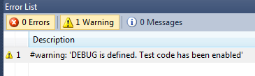
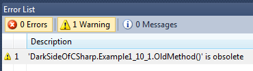
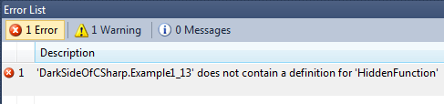

Each slide has a code examples, some even have multiple.
You can view the example by pressing the down key
You can download the code samples right here
These slides were made with reveal.js
When creating new objects you can pass in a series of parameters to initialize fields and properties in your object
Example 1.1
public class User
{
public string Username;
public string Password;
public int Age;
}
public class Example1_1
{
public static void Example()
{
var usr = new User() {Username = "Valdemar", Password = "god123", Age = 24};
}
}
Value types cannot, as the name suggests, be null (only reference types can be null, such is the nature of reference types). The same goes for structs.
This can often be a nuisance, especially if you're processing a dataset from a database which allows null values in the columns.
Value types can be wrapped inside the Nullable
Example 1.2
public static void Example()
{
// DateTime data1 = null; -- Compiler Error!
int? data2 = null; // Works
if (!data2.HasValue)
Console.WriteLine("data2 has no value!"); // Statement will be executed
// Another way to declare a nullable object
Nullable<DateTime> date = DateTime.Now;
// The proper way to access the value
Console.WriteLine(date.Value.ToShortDateString());
// You can also use a cast
Console.WriteLine(((DateTime)date).ToShortDateString());
// This causes an Exception at runtime!
Console.WriteLine("Value of data2: " + ((int)data2));
}
The ?? operator is a special version of the ternary operator. It can be used to provide a default value if the first value is null
Example 1.3
public static void Example()
{
int? A = 5;
int? B = null;
int C = A ?? 42; // C becomes 5
int D = B ?? 42; // D becomes 42
int E = (B != null) ? (int)B : 42; // not as pretty!
}
It it my experience that delegates are not well understood by many programmers.
You can do some great things with delegates. They can help you construct more elegant and reusable code by injecting functions into your code at runtime.
Example 1.4
namespace DarkSideOfCSharp
{
public delegate void LogDelegate(string logString);
public class BusinessClass
{
// We provide a delegate property that can be assigned to at runtime
public LogDelegate Log { get; set; }
public void DoWork()
{
// ...Do some work inside this method...
// Call the Log delegate
Log("Some information");
// ...Continue working...
}
}
public class Example1_4
{
public static void Example()
{
var business = new BusinessClass();
business.Log = ConsoleLogger;
business.DoWork(); // This will print text in the console
business.Log = FileLogger;
business.DoWork(); // This will write text to file
}
public static void ConsoleLogger(string text)
{
Console.WriteLine(text);
}
public static void FileLogger(string text)
{
System.IO.File.WriteAllText(@"c:\logfile.txt", text);
}
}
}
Too few people are using Linq. Linq is awesome,
Use it more often!
The language extensions in C# allow you to use Linq queries as a first class language construct. Awesome!
Example 1.5
public class Person
{
public string Name;
public int Age;
public string Occupation;
}
public class Example1_5
{
public static void Example()
{
// Create a simple dataset
var list = new List<Person>();
list.Add(new Person() { Name = "John", Age = 24, Occupation = "Programmer" });
list.Add(new Person() { Name = "Michelle", Age = 55, Occupation = "Manager" });
list.Add(new Person() { Name = "Alex", Age = 31, Occupation = "Programmer" });
list.Add(new Person() { Name = "Jack", Age = 96, Occupation = "Retired" });
list.Add(new Person() { Name = "Audrey", Age = 13, Occupation = "Student" });
list.Add(new Person() { Name = "Lucas", Age = 17, Occupation = "Student" });
// search the set using Linq syntax
var students = from p in list where p.Occupation == "Student" select p.Name;
var programmers = from p in list where p.Occupation == "Programmer" select p.Name;
var kids = from p in list where p.Age < 18 select p.Name;
}
}
Lambdas are anonymous functions (explained later). They are mostly used in conjunction with Linq methods.
Linq methods are defined as extension methods for types like IEnumerable
Example 1.6
public class Person
{
public string Name;
public int Age;
public string Occupation;
}
public class Example1_6
{
public static void Example()
{
var list = new List<Person>();
list.Add(new Person() { Name = "John", Age = 24, Occupation = "Programmer" });
list.Add(new Person() { Name = "Michelle", Age = 55, Occupation = "Manager" });
list.Add(new Person() { Name = "Alex", Age = 31, Occupation = "Programmer" });
list.Add(new Person() { Name = "Jack", Age = 96, Occupation = "Retired" });
list.Add(new Person() { Name = "Audrey", Age = 13, Occupation = "Student" });
list.Add(new Person() { Name = "Lucas", Age = 17, Occupation = "Student" });
// search the set using lambda syntax
var students = list.Where(x => x.Occupation == "Student").Select(x => x.Name);
var programmers = list.Where(x => x.Occupation == "Programmer").Select(x => x.Name);
var kids = list.Where(x => x.Age < 18).Select(x => x.Name);
}
} Linq defines a bunch of cool functions for IEnumerable. Learn to use them, they will make your life so much easier!
Example 1.7
public static void Example()
{
var array = new int[] { 23, 12, 5, 0, 16, 83, 56, 42 };
bool containsZero = array.Any(x => x == 0); // True
var text = new List<string>() {"Albert", "John", "Mike", "Jessica", "Lucas" };
var firstJ = text.First(x => x.StartsWith("J")); // John
var alphabetical = text.OrderBy(x => x).ToList(); // order list alphabetically
}
You can do really complex things with just one line of code.
Example 1.8
public class Person
{
public string Name;
public int Age;
public string Occupation;
}
public class Example1_8
{
public static void Example()
{
// Create a simple dataset
var list = new List<Person>();
list.Add(new Person() {Name="John", Age = 24, Occupation="Programmer"});
list.Add(new Person() {Name="Michelle", Age = 55, Occupation="Manager"});
list.Add(new Person() {Name="Alex", Age = 31, Occupation="Programmer"});
list.Add(new Person() {Name="Jack", Age = 96, Occupation="Retired"});
list.Add(new Person() {Name="Audrey", Age = 13, Occupation="Student"});
list.Add(new Person() {Name="Lucas", Age = 17, Occupation="Student"});
// Find all people over 30, take their names
// and concatename them into a string, seperated by commas
string names = list.Where(x => x.Age > 30).Select(x => x.Name)
.Aggregate((x, y) => x + ", " + y);
Console.WriteLine(names); // Prints "Michelle, Alex, Jack"
}
} You can use preprocessor directives to affect how which parts of your code get compiled, provide warnings to Visual Studio and lots more
Example 1.9

public static void Example()
{
#if DEBUG
// #warning shows up in Visual Studio's Error List
#warning DEBUG is defined. Test code has been enabled
// You can use this for assertions, tracing and logging and it will
// automatically be removed when building in release configuration
Console.WriteLine("This statement only runs in Debug Configuration");
#endif
}
Classes and methods that are deprecated and should not be used can be marked with the [Obsolete] attribute.
It will signal Visual Studio that calling the method is not recommended and that an alternative method should be used instead.
Example 1.10

public class Example1_10_1
{
public static void Example()
{
OldMethod();
}
[Obsolete]
public static void OldMethod()
{
}
}
In C# 3.0 a short-hand syntax for properties was introduced. Use this syntax when possible
Example 1.11
public class Example1_11
{
int _val;
public int OldStyleValue
{
get { return _val; }
set { _val = value; }
}
// NewStyle has the backing field automatically implemented by the compiler
public int NewStyle { get; set; }
// You can even define different access modifiers for get and set
public static int DifferentAccessor { get; private set; }
public static void Example()
{
DifferentAccessor = 42; // only assignable inside this class
}
}
You can define your own properties and apply them to your classes and methods. Attributes only provide metadata. You can read attributes via reflection at runtime
Example 1.12
namespace DarkSideOfCSharp
{
// This is a custom Attribute. We can use it to find
// special fields in our class. We use the attribute to
// filter out which fields to log and which to skip over
public class LogAttribute : Attribute
{
public string Field;
public LogAttribute(string logField)
{
Field = logField;
}
}
public class Entity
{
public int Value; // Don't log this field
[Log("Text Message")]
public string Text;
[Log("@")]
public DateTime Time;
}
public class Example1_12
{
public static void Example()
{
var e = new Entity();
e.Text = "Some text";
e.Time = DateTime.Now;
e.Value = 56;
// Writes "Text Message: Some text @: 20.9.2012 01:12:01" to the console
LogToConsole(e);
}
public static void LogToConsole(object obj)
{
// We use reflection to get information about the class of the object
// what fields the class contains, and what attributes those fields have
var fields = obj.GetType().GetFields();
foreach (var field in fields)
{
var attr = field.GetCustomAttributes(typeof(LogAttribute), true);
if (attr.Length > 0)
Console.Write(((LogAttribute)attr[0]).Field
+ ": " + field.GetValue(obj) + " ");
}
Console.Write("\n");
}
}
}
A complete life-saver when you're writing unit tests!
Declaring this attribute in your assembly allows another assembly to access classes and methods that are internal.
Without InternalsVisibleTo:
Example 1.13
// In Assembly DarkSideOfCSharp:
using System.Runtime.CompilerServices;
[assembly:InternalsVisibleTo("DarkSideOfCSharp.Tests")]
namespace DarkSideOfCSharp
{
public class Example1_13
{
internal static void HiddenFunction()
{
Console.WriteLine("This function can normally only be
accessed from inside this assembly");
}
}
}
// In Assembly DarkSideOfCSharp.Tests:
namespace DarkSideOfCSharp.Tests
{
class Program
{
static void Main(string[] args)
{
// This works because of the InternalsVisibleToAttribute!
Example1_13.HiddenFunction();
}
}
}
Static constructors can be very powerful if used correctly.
Use them to initialize static fields and properties that must contain the correct data the first time they are read.
Great for things like setting up configuration settings or constant values.
Example 1.14
public class Config
{
public static string DatabaseName {get; private set; }
public static string Hostname { get; private set; }
public static int TimeoutMillisec { get; private set; }
// this is a static constructor. It will run before any field,
// property or method in this class is accessed.
static Config()
{
DatabaseName = "Localhost:1234";
Hostname = "mycomputer.domain.com";
TimeoutMillisec = 1200;
}
}
public class Example1_14
{
public static void Example()
{
// Notice that I don't have to do anything before I read the values.
// The runtime initializes the class for me.
string db = Config.DatabaseName; // db = "Localhost:1234"
string host = Config.Hostname; // host = "mycomputer.domain.com"
int timeout = Config.TimeoutMillisec; // timeout = 1200
}
} You can create static methods that act like members of a class defined somewhere else. This is not much more than syntactic sugar, but it can make your code more readable.
Example 2.1
// Extension methods must be declared inside static classes
public static class MyExtensions
{
// Note the "this" keyword before the first parameter. This is how you
// make an method behave like an extension method
public static int Index<T>(this List<T> list, Func<T, bool> expression)
{
for (int i = 0; i < list.Count; i++)
{
if (expression(list[i]))
return i;
}
return -1;
}
}
public class Example2_1
{
public static void Example()
{
var list = new List<string>()
{"John", "Mike", "Jessica", "Christina", "Michelle"};
int indexOfM = list.Index(x => x.StartsWith("M")); // returns 1
}
} You can define complex types (even generic types), similar to typedef in C/C++, with the using keyword
Example 2.2
namespace DarkSideOfCSharp
{
// Define a "Pair" type as a Tuple of an int and a string
using Pair = Tuple<int, string>;
// Define PairList as a List of Pairs
using PairList = List<Tuple<int, string>>;
public class Example2_2
{
public static void Example()
{
PairList list = new PairList();
list.Add(new Pair(23, "Hello World"));
list.Add(new Pair(56, "More Text"));
// Prints
// System.Collections.Generic.List`1[System.Tuple`2[System.Int32,System.String]]
Console.WriteLine(list.GetType().ToString());
}
}
} You can define methods for you classes that enables you to directly cast your objects to other types.
Implicit conversions can make code much easier to write, but very hard to understand. Make sure you only provide implicit conversion when its function it obvious and clear.
Example 2.3
public class Human
{
public string Name;
public int Age;
// This is not a very bright idea...
public static implicit operator int(Human h) { return h.Age; }
public static implicit operator string(Human h) { return h.Age.ToString(); }
//WTF mate!!?
}
public class Example2_3
{
public static void Example()
{
var human = new Human() { Name = "Valdemar", Age = 24 };
int intValue = human; // intValue = 24
string stringValue = human; // stringValue = "24" !
// You thought casting Human to string would give you the Name?
// See how easy it is to abuse and confuse you code with bad
// implicit conversions!! Use with caution!
}
} I have shown numerous examples of lambda expressions so far. But what are they, really? We use them all the time with Linq, but how do they work?
Lambdas are actually just functions, they get compiled and ran like any other code.
When we write code like this:
bool containsFive = list.Any(x => x == 5);
The lambda expression gets compiled into a function and a delegate to that function is passed into the Any() method.
We can assign lambdas to delegates just like other method or function.
Example 2.4.1
public delegate bool MyDele1(int val);
public class Example2_4_1
{
public static void Example()
{
// create a lambda function that returns true if value is a multiple of 5
MyDele1 dele = x => (x % 5 == 0);
Console.WriteLine("7 is a multiple of 5: " + dele(7)); // "False"
Console.WriteLine("10 is a multiple of 5: " + dele(10)); // "True"
}
}
Lambdas are a form of anonymous functions; functions which are defined inside the scope of another method or function. We can also use the more "traditional" syntax to declare anonymous functions
Example 2.4.2
public delegate bool MyDele2(int val);
public class Example2_4_2
{
public static void Example()
{
// create an anonymous function without using lambda syntax
// Does the same thing as Example 2.4.1
MyDele2 dele = delegate(int x)
{
if (x % 5 == 0)
return true;
else
return false;
};
Console.WriteLine("7 is a multiple of 5: " + dele(7)); // "False"
Console.WriteLine("10 is a multiple of 5: " + dele(10)); // "True"
}
} We can use Func<T, TResult> and Action<T> to avoid having to define our own delegates. These types were introduced in .NET 3.5.
Example 2.4.3
public static void Example()
{
// instead of having to define out own delegate with the correct signature
// we can use the type Func<T,TResult>, which was introduced in .NET 3.5
Func<int, bool> dele = x => (x % 5 == 0);
Console.WriteLine("7 is a multiple of 5: " + dele(7)); // "False"
Console.WriteLine("10 is a multiple of 5: " + dele(10)); // "True"
// Func<> takes 0...4 inputs and returns an output
// if your function returns void then we can use Action<> instead
Action<string> printIt = x => Console.WriteLine(x);
printIt("Hello World"); // prints "Hello World" to the console
}
We can even go bat-shit insane and define anonymous functions which return other anonymous functions! Welcome to functional programming.
Example 2.4.4
// Define a delegate type that returns a value that is a function
public delegate Func<int, bool> FactoryDele(int x);
public class Example2_4_4
{
public static void Example()
{
// Define a function which returns another function
FactoryDele functionFactory = x => ( val => val % x == 0 );
Func<int, bool> divisibleBy5 = functionFactory(5);
Func<int, bool> divisibleBy3 = functionFactory(3);
Console.WriteLine("7 is a divisible of 5: " + divisibleBy5(7)); // "False"
Console.WriteLine("10 is a divisible of 5: " + divisibleBy5(10)); // "True"
Console.WriteLine("7 is a divisible of 3: " + divisibleBy3(7)); // "False"
Console.WriteLine("9 is a divisible of 3: " + divisibleBy3(9)); // "True"
}
}
You may be more familiar with anonymous methods than you would think. If you've ever written Javascript, not to mention if you use JQuery, you have almost definitely used anonymous functions:
Example 2.4.6
Javascript + JQuery:
$("#button").click(function() {
alert("You clicked the button");
});
C# + WinForms:
var button1 = new Button();
button1.Text = "Click 1";
button1.Click += delegate(object sender, EventArgs e) {
MessageBox.Show("You clicked the button");
};
When people start applying functional programming patterns to your code, they often encounter a curious side effect of defining functions within functions.
Consider the next example.
What do you think it will print?
Example 2.5
public static void Example()
{
Action[] actions = null;
Action make = delegate ()
{
// this anonymous function forms a closure
// From here we can access variables declared outside this function
actions = new Action[5];
// but we can also declare variables that exist inside this closure
int i = 1;
// This probably doesn't do what you think...
for (; i <= 5; i++)
actions[i - 1] = () => Console.WriteLine("i is " + i);
};
make();
// Call all the methods
for (int i = 0; i < 5; i++)
actions[i]();
}
The answer is:
i is 6
i is 6
i is 6
i is 6
i is 6
How did that happen?
i exists inside the scope of the make() function. Since that is where the anonymous functions are created, they also reside inside that scope.
The function acts as a closure around the value i and the created functions.
When the loop condition inside make() fails, i has been incremented to 6. When we execute the functions, i still has the value of 6!
We can utilize anonymous functions and lambdas to make our code pretty and easy to read.
Example 2.6
public class Log
{
public static void Time(Action action)
{
var start = DateTime.Now;
action();
var millis = (DateTime.Now - start).TotalMilliseconds;
Console.WriteLine("Action took " + millis + " milliseconds");
}
}
public class Example2_6
{
public static void Example()
{
// how long does it take to sum all numbers between 0 and 100000000??
Log.Time(() =>
{
ulong x = 0;
for (int i = 0; i < 100000000; i++ )
x = x + (ulong)i;
});
// Prints "Action took 314,0179 milliseconds"
}
} Just like we can have anonymous functions, we can also create anonymous types.
They come in handy in many places.
Microsoft ASP.NET MVC makes extensive use of them to return objects which are serialized to JSON
Example 2.7
public static void Example()
{
// create an object of an anonymous type
var anon = new { Name = "Valdemar", Age = 24 };
// anonymous objects are statically typed.
// You even get intellisense in Visual Studio
Console.WriteLine("Name: " + anon.Name);
//... but they're read-only!
//anon.Name = "John"; // Compiler error!
}
Example 2.7.2 (MVC example, not included in project)
public class HomeController : Controller
{
public ActionResult JsonTest()
{
// send the data as http response text to the browser
// HTTP response: "{ Name = Valdemar, Age = 24 }"
return Json(new { Name = "Valdemar", Age = 24 });
}
}
Example 2.7.3 - Create a list of anonymous types
// Don't actually do this, mmmkay?
public static List<T> CreateAnonList(T prototype)
{
return new List<T>();
}
public static void Example()
{
var anon1 = new { Name = "Valdemar", Age = 24 };
var anon2 = new { Name = "John", Age = 56 };
// Use the anonymous type as a "prototype"
// we can infer its type and create a list of that type!
var anonList = CreateAnonList(anon1);
anonList.Add(anon1);
anonList.Add(anon2);
}
I bet you didn't know C# had a goto statement?!
Thankfully you can only use goto inside the scope of a single function.
Example 3.1
public static void Example()
{
int[][][] Map = MakeData();
int x = 0;
int y = 0;
int z = 0;
for(x=0; x < 10; x++)
for (y = 0; y < 10; y++)
for (z = 0; z < 10; z++)
if(Map[x][y][z] == 25)
goto End;
End:
Console.WriteLine("Found 25 at " + x + "," + y + "," + z);
}
C# makes it very easy to call extern, native code DLLs.
The DLLImport attribute is defined in System.Runtime.InteropServices.
By using DLLImport you can also write your own Dlls in C or C++ and call them from C#.
www.pinvoke.net lists import statements for just about every WinAPI function call.
Works with Mono on Linux too! (.so files)
Example 3.2.2 Console window in WinForms applications
public class Example3_2_2
{
[DllImport("kernel32.dll", SetLastError = true, ExactSpelling = true)]
static extern bool FreeConsole();
[DllImport("kernel32.dll")]
static extern bool AllocConsole();
public static void Example()
{
var form = new Form();
var button1 = new Button();
button1.Text = "Show console";
button1.Top = 10;
var button2 = new Button();
button2.Text = "Hide Console";
button2.Top = 50;
var button3 = new Button();
button3.Text = "Print time";
button3.Top = 100;
// Alternative way to accomplish the same thing using lambda syntax
button1.Click += (sender, e) => AllocConsole();
button2.Click += (sender, e) => FreeConsole();
button3.Click += (sender, e) =>
Console.WriteLine("Debug message @ " + DateTime.Now.ToLongTimeString());
form.Controls.Add(button1);
form.Controls.Add(button2);
form.Controls.Add(button3);
form.ShowDialog();
}
}
You can use any unicode character you want
for variable names.
(as long as it doesn't have special meaning in C# syntax).
...although I wouldn't recommend doing it.
Example 3.3
public static void Example()
{
decimal Verðbólguspá = 12.5M; // totally legal!
}
C# has pointers. Yup, bet you didn't know that...
You can declare and work with pointers
inside an unsafe{} context.
...and you need to explicitly tell the compiler
to allow unsafe code
Example 3.4 - Unsafe code (do not try this at home!)
public static void Example()
{
int val = 0;
unsafe
{
// allocate memory on the heap
int* arrPtr = (int*)Marshal.AllocHGlobal(100 * 4);
int i = 0;
while (i < 100)
{
*(arrPtr + 4 * i) = i * 2;
i++;
}
i = 0;
while (i < 100)
{
val = *(arrPtr + 4 * i);
Console.WriteLine(val.ToString()); // Prints 0 2 4 6 ... 198
i++;
}
}
} Communicating with legacy code
Using native libraries with no alternative for .NET
Building plugins and modules that can interop with native hosts
Native code is faster, and I'm a speed junkie!
C# supports a special type of routines called generators.
Generators return a sequence of items, but one at a time.
They are useful for many things, an example being when you're working with large amounts of data and don't wish to load it all into memory.
Example 3.5
public class Example3_5
{
public static IEnumerable<Tuple<string, byte[]>> GetFiles(string directory)
{
var files = Directory.GetFiles(directory);
foreach (var file in files)
{
var fi = new FileInfo(file);
if (fi.Length > 1024 * 1024 * 20) // skip files larger than 20 meg
continue;
var content = File.ReadAllBytes(file);
yield return new Tuple<string, byte[]>(file, content);
}
}
public static void Example()
{
string path =
@"C:\Program Files (x86)\Microsoft Visual Studio 10.0\Common7\IDE";
// let's count all the zero bytes in every file in the directory
foreach (var file in GetFiles(path))
{
int count = file.Item2.Count(x => x == 0);
Console.WriteLine(file.Item1 + " contains " + count + " zero bytes");
}
}
}